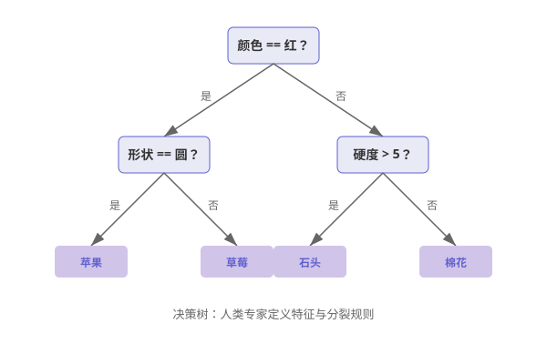
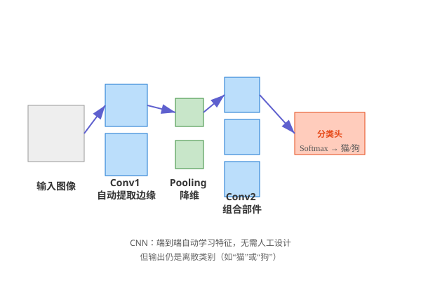
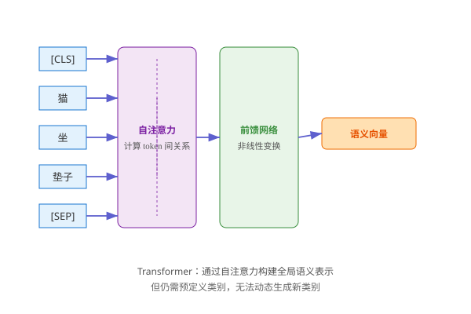

引言：分类即智能
从图灵测试到GPT-4，AI的核心任务始终是分类。本文以极客视角，用初中生也能懂的例子，讲清70年演进逻辑。
你看到一个动物：
- 有四条腿、毛茸茸、汪汪叫 → 你分类为“狗”；
- 有翅膀、会飞、打鸣 → 你分类为“公鸡”。
AI也在做同样的事，只是方式不断进化。
[1950s–2010] 规则匹配分类
最早的AI像一个死板的程序员，所有知识都靠人类一条条写进去。
如何在没有数据的情况下让AI做决策？
人类专家写规则，AI严格匹配。
程序员告诉AI：
if (email.contains("免费") && email.contains("中奖")) {
label = "垃圾邮件";
} else {
label = "正常邮件";
}
但坏人只要把“免费”改成“免·费”，规则就失效了。
| 通俗解释 | 专业术语 |
|---|---|
| 人写死规则，机器照做 | 专家系统 / 符号主义 AI |
| 根据特征一步步判断 | 决策树 (ID3, C4.5) |
| 手工设计特征 + 数学分类 | SVM + 人工特征工程 |

规则太死板！世界太复杂，人类无法穷尽所有情况。→ 需要让AI自己从数据中学习。
[2012–2022] 监督学习分类
2012年，AlexNet用深度学习引爆AI革命。
手工特征无法处理图像、语音等高维数据。
给AI看百万张带标签的图片，让它自己总结规律。
科学家给AI看100万张照片，每张都标好名字：
- 这张是“猫”
- 这张是“狗”
AI通过多层“滤镜”分析：
- 第一层：找边缘、颜色块；
- 第二层：组合成眼睛、耳朵；
- 最后一层：判断“整体像猫还是狗”。
训练完后，它就能认新照片了！
| 通俗解释 | 专业术语 |
|---|---|
| AI看百万张带标签图片，自己总结规律 | CNN (AlexNet, ResNet) |
| AI读大量标注文本，学会判断情感 | RNN/LSTM + 注意力 |
| 先在大数据上学通用知识，再在小数据上微调 | 预训练+微调 |

AI只能从人类教过的类别里选答案。如果你问“这是什么动物？”，但它只学过“猫”和“狗”，就算看到狐狸也会硬说成“狗”。→ 需要让AI自己定义类别。
[2023–未来] 自回归语义分类
大模型的核心机制是自回归（Autoregressive）：每一步生成的词，都会作为下一步的输入，形成闭环。
真实世界是开放的，人类无法预先定义所有类别。
通过自回归生成，在连续语义空间中动态构建分类体系。每一步都是对“下一个词”的分类，输出立即成为新输入。
你问AI：“分析以下评论，归纳主要情绪类型。”
AI不是一次性想好答案，而是一个字一个字生成：
输出: "1. "
输出: "愤怒"
输出: "（"
输出: "占比"
输出: "30%"
输出: "）"
输出: "\n2. "
每一步，AI都在做一次分类任务：从几万个词中选出最可能的下一个词。
输入 → 分类 → 输出 → 新输入 → 再分类 → ...
这就是自回归——输出自动回归为输入，持续生成。
| 通俗解释 | 专业术语 |
|---|---|
| 每生成一个词，都作为下一步的输入 | 自回归生成 (Autoregressive Generation) |
| 在脑子里建一张“语义地图” | 连续语义向量空间 |
| 看一句话时，能同时关注所有词 | 自注意力机制 (Self-Attention) |
| 图像和文字映射到同一空间 | 对比学习 (CLIP) |

自回归生成可能因早期错误导致后续偏差（错误累积），且无法并行生成。但其优势在于：能动态构建开放世界的分类体系，无需人类预设。
总结：统一理论
AI分类的70年演进：
[1950s]人写规则 → AI死记硬背；[2012]人给数据 → AI学会认已知；[2023]人给任务 → AI通过自回归闭环自己思考怎么分。
而大模型的真正突破在于：将分类任务转化为自回归生成过程，在生成中构建对世界的理解。
这，就是智能的起点。